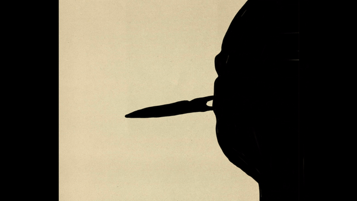
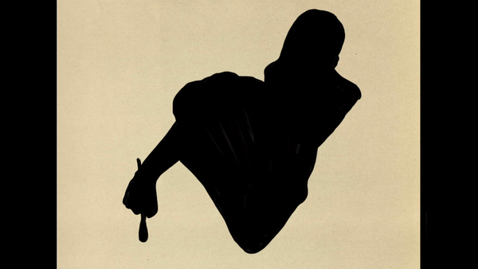
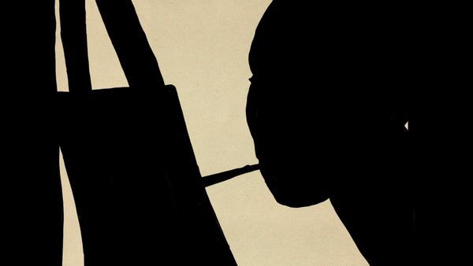

Martha Ann Honeywell
"Silhouettes". 1846-1848. Paper, ink, wood, gilding.
Art description
In 1848, Lydia Ann Battin and Jackson Hughes of West Chester,
Pennsylvania celebrated their marriage by commissioning a unique pair of
cut-and-paste silhouettes. The bust-length profiles—cut skillfully from
black paper, pasted onto white paper, and arranged so that they gazed at
one another—were not particularly unusual, apart from the superb
craftsmanship they displayed. Instead, the profiles’ uniqueness lay in
the inscriptions penned below the images: “Cut Without Hands by M. A.
Honeywell.”
About the artist
Honeywell was an extraordinary American artist. For nearly sixty years
(1798-1856), she traveled, primarily by herself, across the expanding
United States and in more than five countries around the world (Canada,
France, Germany, Switzerland, and the United Kingdom), enthralling
patrons with her seemingly surprising confluence of artistic ability and
physical disability. Customers like the Hugheses attended Honeywell’s
shows as much to examine and acquire her visual art as to gaze at her
atypical body. Capitalizing on this unexpected combination of artistic
capacity and physical incapacity, Honeywell sustained a successful and
profitable career.

Interesting fact
Honeywell’s career began early. Born in Westchester, New York in 1786,
her parents moved shortly after to New York City, where they opened a
fruit store on Harman Street. The family soon learned that Martha Ann’s
body attracted customers as much as the apples and pears they sold.
“Hundreds, particularly of young people,” one patron recalled, went to
the store “under the pretense of purchasing fruit but in reality for the
purpose of seeing this marvellous child.” From this experience,
Honeywell’s parents decided that exhibition could be a way for Martha
Ann to earn her living. They arranged for her first show at the nearby
American Museum at the young age of twelve.
Saunders Ken Grems Nellis
"Cut Paper Picture". 1829-1865. Ink, paper.
Art description
Like Honeywell and Rogers, Nellis centered his exhibitions on the
duality of artistic ability and physical difference. He usually began
his shows with demonstrations of his skills in the visual arts, creating
watch-papers, valentines, paper fly-boxes, and silhouettes, all with his
feet. Then the artist captivated customers with performances of
dexterous tasks. He wound a watch, shot a bow and arrow, loaded and
fired a pistol, and even shaved a member of the audience. Nellis’s
exhibitions closed with music and dance. He played the violin,
accordion, cello, triangle, and drums; sang; and danced. Audience
members described their visits as “astonishing” and “entertaining.”
About the artist
While Honeywell was performing at the Peale Museum in Baltimore,
Saunders Ken Grems Nellis, then only eleven years old, was exhibiting
his body, which lacked arms and hands, and his artistic skills across
town at the Maryland Museum, launched the previous year by James
Griffiths. Patrons described Nellis’s shows—which combined visual art,
music, dance, theater, and comedy—as evidence of “extraordinary genius.”
Over the next four decades, the artist performed in hundreds of venues
for thousands of patrons across North and South America, the Caribbean,
and Europe.

Interesting fact
As Nellis performed more in museums, the carnivalesque nature of his
shows increased. Some museum managers paired his exhibitions with those
of African, Native, and Hispanic peoples whose racialized features they
displayed as the primary attraction. Catering to white customers’
prejudices and penchant for spectacle, museum operators exhibited men
and women of color as freakish and subhuman. Again, performances of
disability mirrored those of race. Museumgoers marveled at Nellis’s body
just as they did the racially othered men and women on view.
Sarah Rogers
"Watercolor". 1806-1815. Paper, ink, watercolors.
Art description
Audience members were not the only admirers of Rogers’s artwork and she
soon attracted the attention of other artists. Charles Willson Peale,
one of the foremost painters, naturalists, and museum proprietors of the
day, learned of her shows and acquired their productions for the
collection of his Philadelphia Museum. Rogers donated a “drawing of
Flowers” (two Burdock flowers with insects nearby). Like other viewers,
Peale valued Rogers for their confluence of artistic skill and physical
difference, which appealed to his dual interests in art and the natural
world.
About the artist
Rogers was nearly Honeywell’s age—born just three years later, in 1789,
in Lempster, New Hampshire. Although she began making art at a young
age, her first public recognition came in 1806 when her work caught the
attention of a local newspaper editor. Describing her “striking”
artistic productions and body, which was “divested of all use of all of
her limbs,” the editor encouraged readers to call on Rogers to see her
faculties and issue monetary donations. This suggestion must have proved
satisfactory—and financially advantageous—to the artist. Within months
she began performing at the Columbian Museum in Boston and launched a
national tour.

Interesting fact
Rogers’s exhibitions, like Honeywell’s, centered on the juxtaposition of
ability and disability. Her advertisements described how “Nature” had
“deprived” her of limbs but, as if to make “amends,” bestowed on her
artistic talents that “surpassed all human belief.” Patrons tended to
agree. They called her shows “interesting and curious” and her art
deserving of “wonder and approbation.” Honeywell and Rogers’s combined
exhibition in Charleston proved especially popular. Customers convinced
them to extend their stay in the city and the artists arranged joint
shows in Savannah, Georgia and Norfolk, Virginia based on this success.